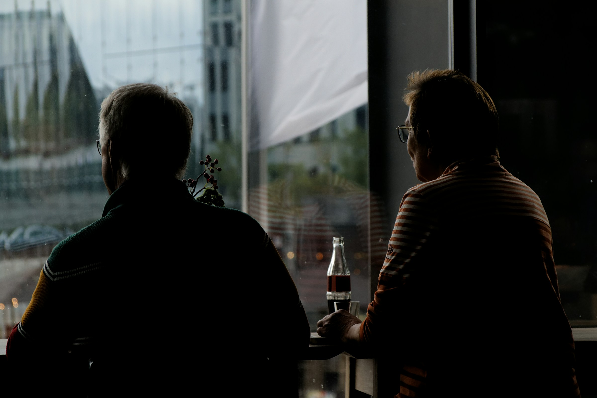
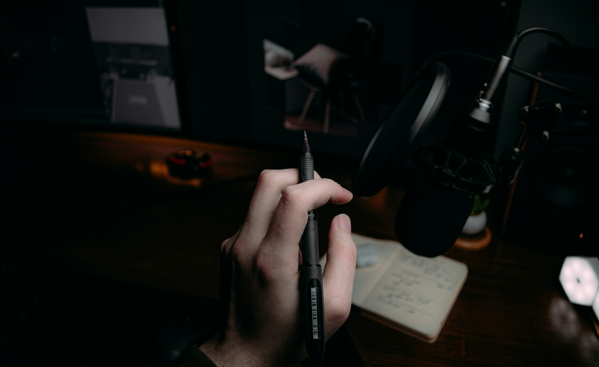

Falta 1 frase, não vontade.
Todo escritório de serviços diz que cresce por indicação. O cliente elogia, promete apresentar você para 1 amigo, e não acontece nada. Ele não tem 1 frase pronta para repetir sobre o que você resolve.

O elogio que
não vira
cliente.
O cliente promete indicar, e promete de verdade. Só que, quando o amigo pergunta o que você faz, a resposta que sai é contabilidade, advocacia ou consultoria. Isso descreve a profissão, não o problema que você resolve, e ninguém contrata uma profissão com pressa.
47% não usam
marketing digital.
78% não atuam
com nicho.
Os 2 números são da Pesquisa de Preços e Serviços do Sescon-SP, feita on-line em junho de 2024 com 255 escritórios contábeis do estado de São Paulo, com margem de erro de 5,9%. Sem prospecção e sem recorte, a entrada de clientes fica inteira nas mãos de quem lembrar de você na hora certa.
Indicação não
é canal.
É consequência
de clareza.
Canal é caminho que você controla e consegue repetir. Indicação não é isso: ela depende de alguém lembrar de você na hora em que outra pessoa pede ajuda. O que você controla é o que essa pessoa tem para dizer. Dê a ela 1 frase que diga para quem você resolve o quê, e a indicação deixa de depender só da memória de quem gosta do seu trabalho.
1 frase que o
cliente repete.
A frase não faz
o trabalho.
Ela só encurta
o caminho.
Escrever a frase não substitui entrega boa, e ter recorte não obriga ninguém a recusar cliente de fora. Ela também envelhece: quando o serviço mudar, a frase muda junto.

Escreva 1 frase
em 12 palavras.
Para quem, qual problema, o que muda.
Escreva hoje e mande para 3 clientes ainda esta semana. Quando a frase voltar corrigida por eles, você tem a única coisa que transforma elogio em cliente novo: alguém sabendo exatamente o que dizer sobre o seu trabalho.